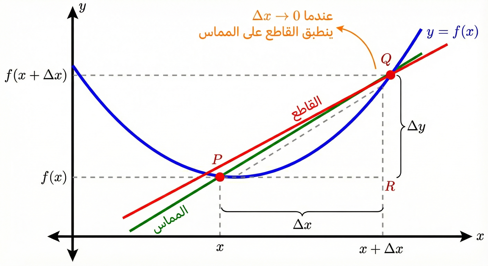
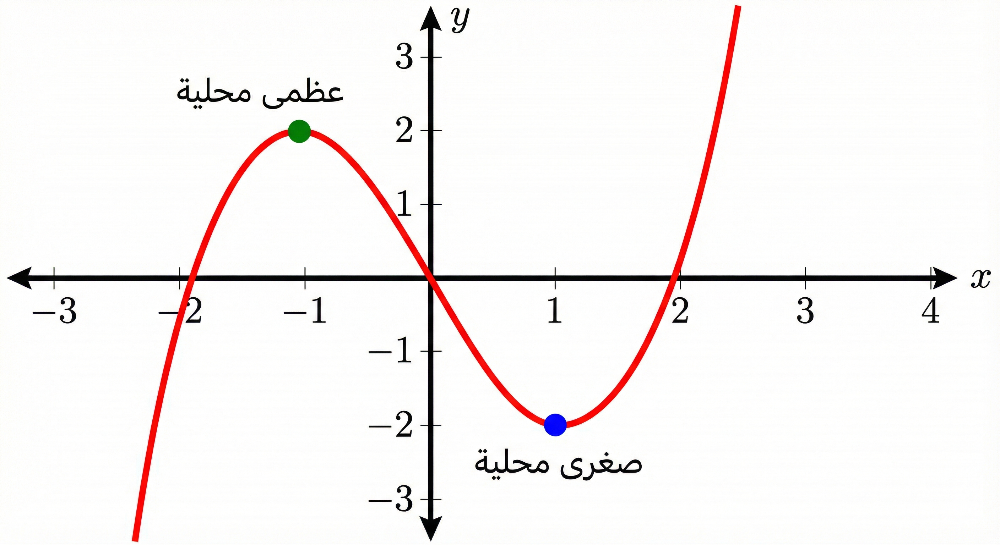
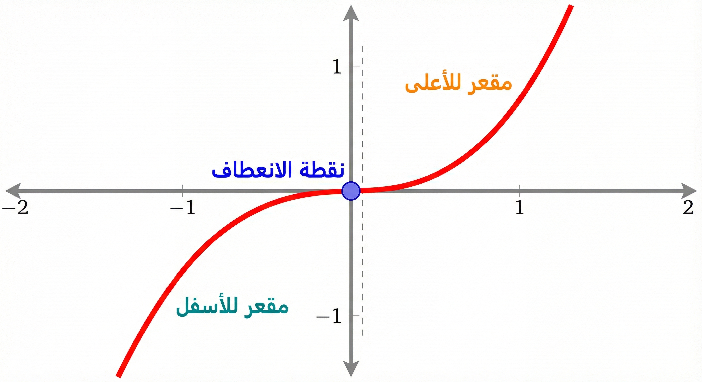
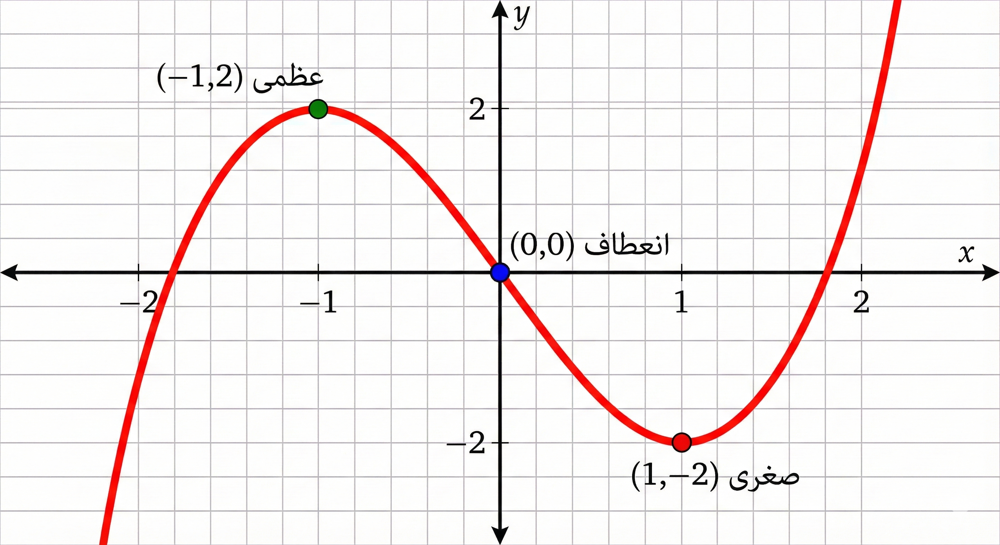
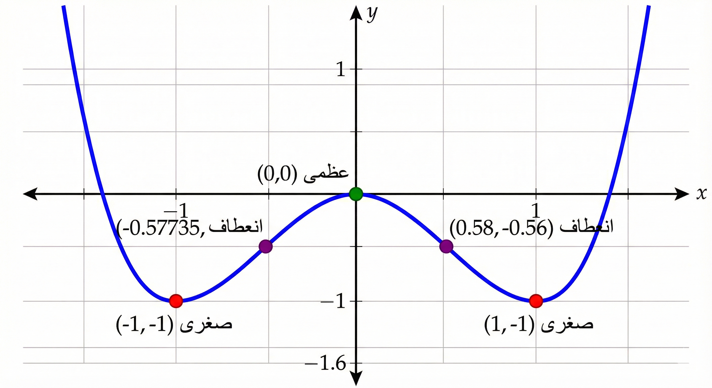
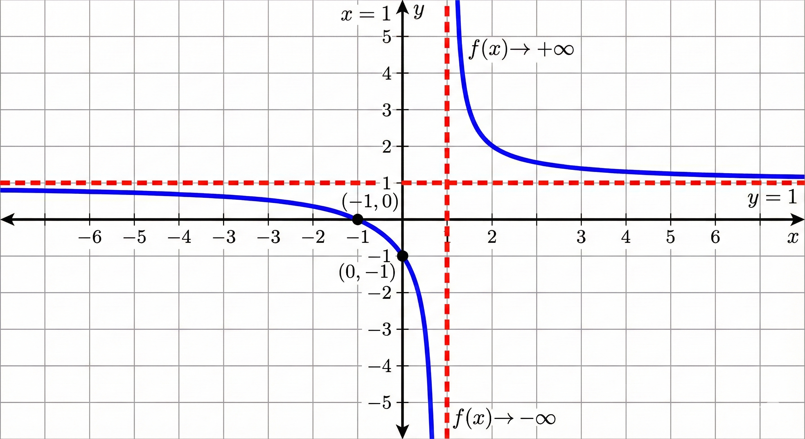

التفاضل وتطبيقاته
تتمحور أهداف هذه الوحدة حول تمكين المتدرب من فهم مفهوم التفاضل (الاشتقاق) واكتساب المهارات اللازمة لحساب مشتقات الدوال.
الهدف العام للوحدة:
تهدف هذه الوحدة إلى إتقان حساب المشتقات باستخدام القواعد الأساسية وتوظيفها في التطبيقات العملية والهندسية.
الأهداف التفصيلية:
من المتوقع في نهاية هذه الوحدة التدريبية أن يكون المتدرب قادراً وبكفاءة على أن:
- يُعرف المشتقة الأولى وتفسيرها الهندسي (ميل المماس).
- يطبق قواعد الاشتقاق الأساسية (القوة، الضرب، القسمة).
- يوجد مشتقات الدوال المثلثية والأسية واللوغاريتمية.
- يحسب المشتقات من الرتب العليا والاشتقاق الضمني.
- يوظف التفاضل في تطبيقات القيم القصوى ورسم المنحنيات.
أهمية التفاضل
يُعد التفاضل ركيزة أساسية في علم الرياضيات وتطبيقاته، حيث يُستخدم لقياس معدلات التغير اللحظية وتحديد سلوك الدوال. تكمن أهميته في قدرته على حل مشكلات معقدة في الفيزياء، والهندسة، والاقتصاد.
الوقت المتوقع للتدريب على هذه الوحدة: 14 ساعة تدريبية.
الفصل الأول: الاشتقاق
تعريف المشتقة
لتكن \(y = f(x)\) دالة معرفة على مجال \(I\). تُعرف المشتقة الأولى للدالة عند النقطة \(x\) بالنهاية التالية (إذا وُجدت): \[f'(x) = \lim_{\Delta x \to 0} \frac{f(x + \Delta x) - f(x)}{\Delta x}\]
رموز المشتقة: \[f'(x), \quad y', \quad \frac{dy}{dx}, \quad \frac{df}{dx}\]
هندسياً، تمثل المشتقة \(f'(x_0)\) ميل المماس لمنحنى الدالة \(y=f(x)\) عند النقطة \((x_0, f(x_0))\).

أمثلة على التعريف (1)
أوجد مشتقة الدالة \(f(x) = 3x - 5\) باستخدام التعريف.
الحل بالتفصيل:
1. نكتب قانون التعريف: \[f'(x) = \lim_{\Delta x \to 0} \frac{f(x + \Delta x) - f(x)}{\Delta x}\]
2. نوجد قيمة \(f(x + \Delta x)\): نعوض عن كل \(x\) في الدالة بـ \((x + \Delta x)\): \[f(x + \Delta x) = 3(x + \Delta x) - 5 = 3x + 3\Delta x - 5\]
3. نعوض في القانون: \[\begin{aligned} f'(x) &= \lim_{\Delta x \to 0} \frac{(3x + 3\Delta x - 5) - (3x - 5)}{\Delta x} \\ &= \lim_{\Delta x \to 0} \frac{3x + 3\Delta x - 5 - 3x + 5}{\Delta x} \end{aligned}\]
4. نختصر الحدود المتشابهة في البسط: (نحذف \(3x\) مع \(-3x\)، ونحذف \(-5\) مع \(+5\)) \[f'(x) = \lim_{\Delta x \to 0} \frac{3\Delta x}{\Delta x}\]
5. نختصر \(\Delta x\) من البسط والمقام ثم نوجد النهاية: \[f'(x) = \lim_{\Delta x \to 0} (3) = 3\]
أمثلة على التعريف (2)
أوجد مشتقة الدالة \(f(x) = x^2 + 4\) باستخدام التعريف.
الحل بالتفصيل:
1. نوجد \(f(x + \Delta x)\): \[f(x + \Delta x) = (x + \Delta x)^2 + 4\] نفك القوس التربيعي: \((x^2 + 2x\Delta x + (\Delta x)^2) + 4\)
2. نعوض في القانون: \[f'(x) = \lim_{\Delta x \to 0} \frac{[x^2 + 2x\Delta x + (\Delta x)^2 + 4] - [x^2 + 4]}{\Delta x}\]
3. نختصر الحدود (\(x^2\) مع \(-x^2\) و \(4\) مع \(-4\)): \[f'(x) = \lim_{\Delta x \to 0} \frac{2x\Delta x + (\Delta x)^2}{\Delta x}\]
4. نأخذ \(\Delta x\) عامل مشترك من البسط: \[f'(x) = \lim_{\Delta x \to 0} \frac{\Delta x(2x + \Delta x)}{\Delta x}\]
5. نختصر \(\Delta x\) ونعوض عن الباقي بصفر: \[f'(x) = \lim_{\Delta x \to 0} (2x + \Delta x) = 2x + 0 = 2x\]
أمثلة على التعريف (3)
أوجد مشتقة الدالة \(f(x) = x^2 - 3x\) باستخدام التعريف.
الحل بالتفصيل:
1. نوجد \(f(x + \Delta x)\): \[f(x + \Delta x) = (x + \Delta x)^2 - 3(x + \Delta x)\] \[= (x^2 + 2x\Delta x + (\Delta x)^2) - 3x - 3\Delta x\]
2. نعوض في القانون ونطرح \(f(x)\): \[f'(x) = \lim_{\Delta x \to 0} \frac{(x^2 + 2x\Delta x + (\Delta x)^2 - 3x - 3\Delta x) - (x^2 - 3x)}{\Delta x}\]
3. نختصر الحدود المتشابهة (\(x^2\) مع \(-x^2\) و \(-3x\) مع \(+3x\)): \[f'(x) = \lim_{\Delta x \to 0} \frac{2x\Delta x + (\Delta x)^2 - 3\Delta x}{\Delta x}\]
4. نأخذ \(\Delta x\) عامل مشترك: \[f'(x) = \lim_{\Delta x \to 0} \frac{\Delta x(2x + \Delta x - 3)}{\Delta x}\]
5. نختصر ونحسب النهاية: \[f'(x) = \lim_{\Delta x \to 0} (2x + \Delta x - 3) = 2x + 0 - 3 = 2x - 3\]
قواعد الاشتقاق الأساسية
مشتقة العدد الثابت تساوي دائماً صفراً. \[\frac{d}{dx}(c) = 0\]
أوجد مشتقة الدوال التالية:
- \(f(x) = 5 \quad \Longrightarrow \quad f'(x) = 0\)
- \(g(x) = -3 \quad \Longrightarrow \quad g'(x) = 0\)
- \(y = \pi \quad \Longrightarrow \quad y' = 0\)
لأي عدد حقيقي \(n\)، مشتقة \(x^n\) هي: \[\frac{d}{dx}(x^n) = n x^{n-1}\]
أوجد مشتقة الدوال التالية:
- \(f(x) = x^4 \quad \Longrightarrow \quad f'(x) = 4x^{4-1} = 4x^3\)
- \(g(x) = x^{-2} \quad \Longrightarrow \quad g'(x) = -2x^{-3} = \frac{-2}{x^3}\)
- \(y = x \quad \Longrightarrow \quad y' = 1x^{0} = 1\)
قواعد الاشتقاق (تابع)
مشتقة عدد ثابت مضروب في دالة تساوي الثابت مضروباً في مشتقة الدالة. \[\frac{d}{dx}[c \cdot f(x)] = c \cdot f'(x)\]
- \(y = 3x^5 \quad \Longrightarrow \quad y' = 3(5x^4) = 15x^4\)
- \(y = \frac{1}{2}x^4 \quad \Longrightarrow \quad y' = \frac{1}{2}(4x^3) = 2x^3\)
- \(y = -2x^{-3} \quad \Longrightarrow \quad y' = -2(-3x^{-4}) = 6x^{-4}\)
مشتقة مجموع (أو فرق) دالتين تساوي مجموع (أو فرق) مشتقتيهما. \[\frac{d}{dx}[f(x) \pm g(x)] = f'(x) \pm g'(x)\]
- \(y = x^2 + 3x \quad \Longrightarrow \quad y' = 2x + 3\)
- \(y = x^5 - 2x^2 + 1 \quad \Longrightarrow \quad y' = 5x^4 - 4x\)
- \(y = 4x^3 - 5x + 7 \quad \Longrightarrow \quad y' = 12x^2 - 5\)
قاعدتا الضرب والقسمة
مشتقة حاصل ضرب دالتين = (الأولى \(\times\) مشتقة الثانية) + (الثانية \(\times\) مشتقة الأولى). \[\frac{d}{dx}[f(x)g(x)] = f(x)g'(x) + g(x)f'(x)\]
- \(y = x^2(2x+1)\) \[y' = (x^2)(2) + (2x+1)(2x) = 2x^2 + 4x^2 + 2x = 6x^2 + 2x\]
- \(y = (x+3)(x-2)\) \[y' = (x+3)(1) + (x-2)(1) = x + 3 + x - 2 = 2x + 1\]
- \(y = (3x)(x^4)\) \[y' = (3x)(4x^3) + (x^4)(3) = 12x^4 + 3x^4 = 15x^4\]
\[\frac{d}{dx}\left[\frac{f(x)}{g(x)}\right] = \frac{g(x)f'(x) - f(x)g'(x)}{[g(x)]^2}\] (المقام \(\times\) مشتقة البسط) - (البسط \(\times\) مشتقة المقام) على مربع المقام.
- \(y = \frac{x}{x+1}\) \[y' = \frac{(x+1)(1) - (x)(1)}{(x+1)^2} = \frac{x+1-x}{(x+1)^2} = \frac{1}{(x+1)^2}\]
- \(y = \frac{1}{x^2}\) \[y' = \frac{(x^2)(0) - (1)(2x)}{(x^2)^2} = \frac{-2x}{x^4} = \frac{-2}{x^3}\]
- \(y = \frac{3x+1}{x-2}\) \[y' = \frac{(x-2)(3) - (3x+1)(1)}{(x-2)^2} = \frac{3x-6-3x-1}{(x-2)^2} = \frac{-7}{(x-2)^2}\]
قاعدة السلسلة (القوى)
مشتقة دالة مرفوعة لقوة \(n\): \[\frac{d}{dx}[ (g(x))^n ] = n(g(x))^{n-1} \cdot g'(x)\]
- \(y = (2x+1)^5\) \[y' = 5(2x+1)^4 \cdot (2) = 10(2x+1)^4\]
- \(y = (x^2+3)^4\) \[y' = 4(x^2+3)^3 \cdot (2x) = 8x(x^2+3)^3\]
- \(y = \sqrt{3x-1} = (3x-1)^{0.5}\) \[y' = 0.5(3x-1)^{-0.5} \cdot (3) = \frac{1.5}{\sqrt{3x-1}}\]
مشتقات الدوال المثلثية
مشتقة دالة الجيب تساوي جيب التمام مضروباً في مشتقة الزاوية. \[\frac{d}{dx}[\sin u] = \cos u \cdot u'\]
أوجد المشتقة الأولى للدوال التالية:
- \(y = \sin(x) \quad \Longrightarrow \quad y' = \cos(x)\)
- \(y = \sin(5x) \quad \Longrightarrow \quad y' = \cos(5x) \cdot 5 = 5\cos(5x)\)
- \(y = \sin(x^2) \quad \Longrightarrow \quad y' = \cos(x^2) \cdot 2x = 2x\cos(x^2)\)
مشتقة جيب التمام تساوي سالب الجيب مضروباً في مشتقة الزاوية. \[\frac{d}{dx}[\cos u] = -\sin u \cdot u'\]
- \(y = \cos(3x) \quad \Longrightarrow \quad y' = -\sin(3x) \cdot 3 = -3\sin(3x)\)
- \(y = \cos(x^4) \quad \Longrightarrow \quad y' = -\sin(x^4) \cdot 4x^3 = -4x^3\sin(x^4)\)
- \(y = \cos(\sqrt{x}) \quad \Longrightarrow \quad y' = -\sin(\sqrt{x}) \cdot \frac{1}{2\sqrt{x}} = \frac{-\sin(\sqrt{x})}{2\sqrt{x}}\)
تابع الدوال المثلثية
مشتقة الظل تساوي مربع القاطع مضروباً في مشتقة الزاوية. \[\frac{d}{dx}[\tan u] = \sec^2 u \cdot u'\]
- \(y = \tan(2x) \quad \Longrightarrow \quad y' = \sec^2(2x) \cdot 2 = 2\sec^2(2x)\)
- \(y = \tan(x^3) \quad \Longrightarrow \quad y' = \sec^2(x^3) \cdot 3x^2 = 3x^2\sec^2(x^3)\)
- \(y = \tan(\frac{1}{x}) \quad \Longrightarrow \quad y' = \sec^2(\frac{1}{x}) \cdot (\frac{-1}{x^2}) = \frac{-\sec^2(1/x)}{x^2}\)
مشتقة ظل التمام تساوي سالب مربع قاطع التمام مضروباً في مشتقة الزاوية. \[\frac{d}{dx}[\cot u] = -\csc^2 u \cdot u'\]
- \(y = \cot(x) \quad \Longrightarrow \quad y' = -\csc^2(x)\)
- \(y = \cot(4x) \quad \Longrightarrow \quad y' = -\csc^2(4x) \cdot 4 = -4\csc^2(4x)\)
- \(y = \cot(1-x) \quad \Longrightarrow \quad y' = -\csc^2(1-x) \cdot (-1) = \csc^2(1-x)\)
تابع الدوال المثلثية (Sec, Csc)
مشتقة القاطع تساوي القاطع مضروباً في الظل ومضروباً في مشتقة الزاوية. \[\frac{d}{dx}[\sec u] = \sec u \tan u \cdot u'\]
- \(y = \sec(3x) \quad \Longrightarrow \quad y' = \sec(3x)\tan(3x) \cdot 3 = 3\sec(3x)\tan(3x)\)
- \(y = \sec(x^2) \quad \Longrightarrow \quad y' = \sec(x^2)\tan(x^2) \cdot 2x = 2x\sec(x^2)\tan(x^2)\)
- \(y = \sec(5x+1) \quad \Longrightarrow \quad y' = 5\sec(5x+1)\tan(5x+1)\)
مشتقة قاطع التمام تساوي سالب قاطع التمام مضروباً في ظل التمام ومضروباً في مشتقة الزاوية. \[\frac{d}{dx}[\csc u] = -\csc u \cot u \cdot u'\]
- \(y = \csc(2x) \quad \Longrightarrow \quad y' = -2\csc(2x)\cot(2x)\)
- \(y = \csc(x^3) \quad \Longrightarrow \quad y' = -\csc(x^3)\cot(x^3) \cdot 3x^2 = -3x^2\csc(x^3)\cot(x^3)\)
- \(y = \csc(\frac{x}{2}) \quad \Longrightarrow \quad y' = -\frac{1}{2}\csc(\frac{x}{2})\cot(\frac{x}{2})\)
مشتقات الدوال الأسية واللوغارتمية
مشتقة الدالة الأسية الطبيعية تساوي الدالة نفسها مضروبة في مشتقة الأس. \[\frac{d}{dx}[e^u] = e^u \cdot u'\]
أوجد المشتقة الأولى للدوال التالية:
- \(y = e^{3x} \quad \Longrightarrow \quad y' = e^{3x} \cdot 3 = 3e^{3x}\)
- \(y = e^{x^2+1} \quad \Longrightarrow \quad y' = e^{x^2+1} \cdot 2x = 2x e^{x^2+1}\)
- \(y = 5e^x \quad \Longrightarrow \quad y' = 5e^x\)
مشتقة الدالة الأسية (لأساس \(a\)) تساوي الدالة نفسها \(\times\) مشتقة الأس \(\times\) اللوغاريتم الطبيعي للأساس. \[\frac{d}{dx}[a^u] = a^u \cdot \ln(a) \cdot u'\]
- \(y = 2^x \quad \Longrightarrow \quad y' = 2^x \ln(2)\)
- \(y = 3^{2x} \quad \Longrightarrow \quad y' = 3^{2x} \ln(3) \cdot 2 = 2 \cdot 3^{2x} \ln(3)\)
- \(y = 10^{x^2} \quad \Longrightarrow \quad y' = 10^{x^2} \ln(10) \cdot 2x\)
مشتقات اللوغاريتمات
مشتقة اللوغاريتم الطبيعي تساوي مشتقة ما داخل اللوغاريتم على ما داخل اللوغاريتم نفسه. \[\frac{d}{dx}[\ln u] = \frac{u'}{u}\]
- \(y = \ln(x) \quad \Longrightarrow \quad y' = \frac{1}{x}\)
- \(y = \ln(5x) \quad \Longrightarrow \quad y' = \frac{5}{5x} = \frac{1}{x}\)
- \(y = \ln(x^2 + 3) \quad \Longrightarrow \quad y' = \frac{2x}{x^2 + 3}\)
مشتقة اللوغاريتم العام تساوي مشتقة ما داخل اللوغاريتم مقسوماً على (ما داخله \(\times\) اللوغاريتم الطبيعي للأساس). \[\frac{d}{dx}[\log_a u] = \frac{u'}{u \ln a}\]
- \(y = \log_3(x) \quad \Longrightarrow \quad y' = \frac{1}{x \ln 3}\)
- \(y = \log(x) \quad \text{(base 10)} \quad \Longrightarrow \quad y' = \frac{1}{x \ln 10}\)
- \(y = \log_2(x^3) \quad \Longrightarrow \quad y' = \frac{3x^2}{x^3 \ln 2} = \frac{3}{x \ln 2}\)
معادلة المماس والناظم
معادلة المستقيم المار بالنقطة \((x_0, y_0)\) وميله \(m\) هي: \[y - y_0 = m(x - x_0)\]
- للمماس: الميل \(m = f'(x_0)\)
- للناظم (العمودي): الميل \(m_1 = \frac{-1}{m}\)
أولاً: أمثلة على معادلة المماس
-
كثيرات الحدود: أوجد معادلة المماس للمنحنى \(y = x^2 - 3x\) عند \(x=1\).
- نوجد النقطة: \(y(1) = (1)^2 - 3(1) = -2 \quad \Longrightarrow \quad (1, -2)\)
- نوجد الميل: \(y' = 2x - 3 \quad \Longrightarrow \quad m = 2(1) - 3 = -1\)
- المعادلة: \(y - (-2) = -1(x - 1) \Longrightarrow y + 2 = -x + 1 \Longrightarrow \mathbf{y = -x - 1}\)
-
دالة جذرية: أوجد معادلة المماس للمنحنى \(y = \sqrt{x}\) عند النقطة \((4, 2)\).
- نوجد الميل: \(y' = \frac{1}{2\sqrt{x}} \quad \Longrightarrow \quad m = \frac{1}{2\sqrt{4}} = \frac{1}{4}\)
- المعادلة: \(y - 2 = \frac{1}{4}(x - 4) \Longrightarrow y = \frac{1}{4}x - 1 + 2 \Longrightarrow \mathbf{y = \frac{1}{4}x + 1}\)
معادلة الناظم (تابع)
ثانياً: أمثلة على معادلة العمودي (الناظم)
-
دالة تربيعية: أوجد معادلة العمودي على المنحنى \(y = x^2\) عند النقطة \((1, 1)\).
- ميل المماس: \(y' = 2x \quad \Longrightarrow \quad m = 2(1) = 2\)
- ميل العمودي: \(m_1 = \frac{-1}{m} = \frac{-1}{2}\)
- المعادلة: \(y - 1 = -\frac{1}{2}(x - 1) \Longrightarrow y = -0.5x + 0.5 + 1 \Longrightarrow \mathbf{y = -0.5x + 1.5}\)
-
دالة مقلوب: أوجد معادلة العمودي للمنحنى \(y = \frac{1}{x}\) عند \(x = 1\).
- نوجد النقطة: \(y(1) = 1 \quad \Longrightarrow \quad (1, 1)\)
- ميل المماس: \(y' = \frac{-1}{x^2} \quad \Longrightarrow \quad m = -1\)
- ميل العمودي: \(m_1 = \frac{-1}{-1} = 1\)
- المعادلة: \(y - 1 = 1(x - 1) \Longrightarrow y = x - 1 + 1 \Longrightarrow \mathbf{y = x}\)
الاشتقاق الضمني
يستخدم عندما تكون العلاقة بين \(x\) و \(y\) ضمنية \(f(x, y) = 0\). نشتق الطرفين بالنسبة لـ \(x\) ونضرب في \(y'\) عند اشتقاق حدود \(y\).
-
معادلة الدائرة: أوجد \(y'\) للمعادلة \(x^2 + y^2 = 25\)
- نشتق الطرفين: \(2x + 2yy' = 0\)
- ننقل ونبسط: \(2yy' = -2x \quad \Longrightarrow \quad y' = \frac{-x}{y}\)
-
قاعدة الضرب: أوجد \(y'\) للمعادلة \(xy = 1\)
- نشتق (الأول \(\times\) مشتقة الثاني + الثاني \(\times\) مشتقة الأول): \[x \cdot y' + y \cdot 1 = 0\]
- ننقل \(y\) ونقسم: \(xy' = -y \quad \Longrightarrow \quad y' = \frac{-y}{x}\)
-
حدود مختلطة: أوجد \(y'\) للمعادلة \(xy^3 - 3x^2 = xy + 5\)
- نشتق الطرفين: \((y^3 + 3xy^2 y') - 6x = (y + xy')\)
- نجمع حدود \(y'\) في طرف: \(3xy^2 y' - xy' = y - y^3 + 6x\)
- نخرج عامل مشترك ونقسم: \(y'(3xy^2 - x) = y - y^3 + 6x \Longrightarrow y' = \frac{y - y^3 + 6x}{3xy^2 - x}\)
-
دالة مثلثية ضمنية: أوجد \(y'\) للمعادلة \(\sin(y) = 2x + 3\)
- نشتق الطرفين: \(\cos(y) \cdot y' = 2\)
- نقسم على الجتا: \(y' = \frac{2}{\cos(y)} \quad \text{أو} \quad y' = 2\sec(y)\)
المشتقات من الرتبة العليا
هي تكرار عملية الاشتقاق. المشتقة الثانية \(y''\)، الثالثة \(y'''\)، والرابعة \(y^{(4)}\).
-
كثيرة حدود: إذا كانت \(y = x^4 - 2x^3 + 5x\) ، أوجد \(y'''\).
- \(y' = 4x^3 - 6x^2 + 5\)
- \(y'' = 12x^2 - 12x\)
- \(y''' = 24x - 12\)
-
دالة مثلثية: إذا كانت \(f(x) = \cos(3x)\) ، أوجد \(f''(x)\).
- \(f'(x) = -\sin(3x) \cdot 3 = -3\sin(3x)\)
- \(f''(x) = -3\cos(3x) \cdot 3 = -9\cos(3x)\)
-
دالة أسية: إذا كانت \(y = e^{2x}\) ، أوجد \(y^{(4)}\).
- \(y' = 2e^{2x} \quad \Longrightarrow \quad y'' = 4e^{2x} \quad \Longrightarrow \quad y''' = 8e^{2x}\)
- \(y^{(4)} = 16e^{2x}\)
-
دالة مقلوب: إذا كانت \(y = x^{-1}\) ، أوجد المشتقة الثالثة.
- \(y' = -1x^{-2} = \frac{-1}{x^2}\)
- \(y'' = 2x^{-3} = \frac{2}{x^3}\)
- \(y''' = -6x^{-4} = \frac{-6}{x^4}\)
الفصل الثاني: تطبيقات التفاضل
القيم العظمى والصغرى المحلية
القيمة العظمى المحلية : هي نقطة تشبه "القمة" على المنحنى، حيث تتغير الدالة عندها من التزايد (الصعود) إلى التناقص (الهبوط).
القيمة الصغرى المحلية : هي نقطة تشبه "القاع" على المنحنى، حيث تتغير الدالة عندها من التناقص (الهبوط) إلى التزايد (الصعود).
النقاط الحرجة : هي قيم \(x\) التي تكون عندها المشتقة \(f'(x) = 0\) (مماس أفقي). وهي النقاط "المرشحة" لتكون قيماً قصوى.

مثال 1: أوجد النقاط الحرجة للدالة \(f(x) = x^3 - 3x\)
- الاشتقاق: \(f'(x) = 3x^2 - 3\)
- مساواة المشتقة بالصفر: \(3x^2 - 3 = 0 \Longrightarrow x^2 = 1\)
- إيجاد قيم \(x\): \(x = 1\) أو \(x = -1\)
- إذن النقاط الحرجة هي: \(-1, 1\)
مثال 2: أوجد النقاط الحرجة للدالة \(f(x) = x^4 - 2x^2\)
- الاشتقاق: \(f'(x) = 4x^3 - 4x\)
- مساواة المشتقة بالصفر: \(4x(x^2 - 1) = 0\)
- إيجاد قيم \(x\): إما \(x = 0\) أو \(x^2 = 1 \Longrightarrow x = \pm 1\)
- إذن النقاط الحرجة هي: \(0, 1, -1\)
لتكن \(f\) دالة متصلة على الفترة \([a, b]\) وقابلة للاشتقاق على \((a, b)\):
- إذا كانت \(f'(x) > 0\) لكل \(x \in (a, b)\) فإن \(f\) دالة متزايدة على هذه الفترة.
- إذا كانت \(f'(x) < 0\) لكل \(x \in (a, b)\) فإن \(f\) دالة متناقصة على هذه الفترة.
النتيجة: دراسة إشارة المشتقة الأولى \(f'(x)\) تمكننا من تحديد فترات التزايد والتناقص، ومنها معرفة نوع القيم القصوى (العظمى والصغرى).
- الاشتقاق: نوجد المشتقة الأولى \(f'(x)\).
- النقاط الحرجة: نساوي المشتقة بالصفر \(f'(x)=0\) ونحل المعادلة لإيجاد قيم \(x\).
- دراسة الإشارة: نختبر إشارة المشتقة على خط الأعداد حول النقاط الحرجة.
- جدول التغيرات ننظم النتائج في جدول يوضح إشارة \(f'\) وسلوك \(f\).
للدالة \(f(x) = x^3 - 12x\) (النقاط الحرجة: \(-2, 2\))
دراسة الإشارة حول النقاط الحرجة:
- عند \(x = -2\):
- قبلها (\(x=-3\)): \(f'(-3) = 27 - 12 > 0\) (تزايد).
- بعدها (\(x=0\)): \(f'(0) = 0 - 12 < 0\) (تناقص).
- \(\Longleftarrow\) عظمى محلية عند \(x = -2\).
- عند \(x = 2\):
- قبلها (\(x=0\)): \(f'(0) < 0\) (تناقص).
- بعدها (\(x=3\)): \(f'(3) = 27 - 12 > 0\) (تزايد).
- \(\Longleftarrow\) صغرى محلية عند \(x = 2\).
للدالة \(f(x) = x^4 - 4x^3\) (النقاط الحرجة: \(0, 3\))
دراسة الإشارة: المشتقة هي \(f'(x) = 4x^2(x - 3)\).
- عند \(x = 0\):
- قبلها (\(x=-1\)): \(f'(-1) = 4(1)(-4) < 0\) (تناقص).
- بعدها (\(x=1\)): \(f'(1) = 4(1)(-2) < 0\) (تناقص).
- \(\Longleftarrow\) الإشارة لم تتغير \(\Longrightarrow\) ليست قيمة قصوى (مجرد نقطة انعطاف).
- عند \(x = 3\):
- قبلها (\(x=1\)): تناقص.
- بعدها (\(x=4\)): \(f'(4) = 4(16)(1) > 0\) (تزايد).
- \(\Longleftarrow\) صغرى محلية عند \(x = 3\).
اختبار المشتقة الثانية
لتكن \(c\) نقطة حرجة حيث \(f'(c) = 0\) والمشتقة الثانية موجودة، فإن:
- إذا كانت \(f''(c) < 0 \Longrightarrow\) المنحنى مقعر للأسفل (\(\cap\)) \(\Longrightarrow\) توجد قيمة عظمى محلية عند \(c\).
- إذا كانت \(f''(c) > 0 \Longrightarrow\) المنحنى مقعر للأعلى (\(\cup\)) \(\Longrightarrow\) توجد قيمة صغرى محلية عند \(c\).
- إذا كانت \(f''(c) = 0 \Longrightarrow\) الاختبار غير حاسم (فاشل)، ولا بد من استخدام اختبار المشتقة الأولى لتحديد نوع النقطة.
نقطة الانعطاف
التقعر:
- يكون المنحنى مقعراً للأعلى (\(\cup\)) إذا كانت \(f''(x) > 0\) (المماس يقع تحت المنحنى).
- يكون المنحنى مقعراً للأسفل (\(\cap\)) إذا كانت \(f''(x) < 0\) (المماس يقع فوق المنحنى).
نقطة الانعطاف: هي النقطة التي يفصل عندها المنحنى بين تقعرين مختلفين (يتغير التقعر من أعلى لأسفل أو العكس). شرط وجودها أن تكون \(f''(x) = 0\) وتتغير إشارة المشتقة الثانية حولها.

1. للدالة \(f(x) = x^3 - 3x\):
- المشتقة الأولى: \(f'(x) = 3x^2 - 3\)
- المشتقة الثانية: \(f''(x) = 6x\)
- نساوي بالصفر: \(6x = 0 \iff x = 0\)
- دراسة الإشارة حول الصفر:
- قبل الصفر (\(x=-1\)): \(f''(-1) = -6\) (سالب \(\cap\)).
- بعد الصفر (\(x=1\)): \(f''(1) = 6\) (موجب \(\cup\)).
- تغيرت الإشارة \(\Longrightarrow\) توجد نقطة انعطاف عند \(x=0\).
- النقطة هي \((0, f(0)) = (0, 0)\).
2. للدالة \(f(x) = x^4 - 2x^2\):
- المشتقة الأولى: \(f'(x) = 4x^3 - 4x\)
- المشتقة الثانية: \(f''(x) = 12x^2 - 4\)
- نساوي بالصفر: \(12x^2 = 4 \Longrightarrow x^2 = \frac{1}{3} \Longrightarrow x = \pm\frac{1}{\sqrt{3}}\)
- دراسة الإشارة تبين تغير التقعر حول هذه النقاط.
- نقاط الانعطاف عند \(x \approx \pm 0.58\).
رسم المنحنيات
لرسم منحنى دالة يمكن اتباع الخطوات التالية:
- تحديد مجموعة تعريف الدالة \(f(x)\).
- حساب النهايات عند أطراف فترات مجموعة التعريف واستنتاج المستقيمات المقاربة إن وجدت.
- إيجاد النقاط الحرجة وحساب المشتقة الأولى \(f'(x)\) ودراسة إشارتها، ومن ثم استنتاج تزايد وتناقص الدالة.
- حساب المشتقة الثانية \(f''(x)\) ودراسة إشارتها (لتحديد التقعر ونقاط الانعطاف).
- تلخيص كل ما سبق في جدول تغيرات الدالة ثم رسم المنحنى بدقة.
مثال 1: ارسم منحنى الدالة \(f(x) = x^3 - 3x\).
1) مجموعة التعريف: \(D_f=\mathbb{R}\).
2) النهايات: \(\lim_{x\to\pm\infty}f(x)=\pm\infty\).
3) النقاط الحرجة: \(f'(x)=3x^2-3=0 \iff x=\pm 1\).
- عند \(x=-1\): \(f(-1)= -1 + 3 = 2\) (عظمى محلية).
- عند \(x=1\): \(f(1)= 1 - 3 = -2\) (صغرى محلية).
4) نقطة الانعطاف: \(f''(x)=6x=0 \iff x=0\). النقطة \((0,0)\).
5) جدول التغيرات:
| \(x\) | \(-\infty\) | \(-1\) | \(0\) | \(1\) | \(+\infty\) |
|---|---|---|---|---|---|
| \(f'(x)\) | \(+\) | \(0\) | \(-\) | \(0\) | \(+\) |
| \(f(x)\) | \(-\infty\) | \(2\) | \(0\) | \(-2\) | \(+\infty\) |

مثال 2: ارسم منحنى الدالة \(f(x) = x^4 - 2x^2\).
1) النهايات والتناظر: \(D_f=\mathbb{R}\). الدالة زوجية (متناظرة حول \(y\)). \(\lim_{x\to\pm\infty} f(x) = +\infty\).
2) المشتقة الأولى والنقاط الحرجة: \(f'(x) = 4x^3 - 4x = 4x(x^2 - 1)\).
أصفار المشتقة: \(x=0, x=1, x=-1\).
3) المشتقة الثانية والتقعر: \(f''(x) = 12x^2 - 4\).
أصفار المشتقة الثانية: \(x = \pm\frac{1}{\sqrt{3}} \approx \pm 0.58\).
4) جدول التغيرات:
| \(x\) | \(-\infty\) | \(-1\) | \(-0.58\) | \(0\) | \(0.58\) | \(1\) | \(+\infty\) |
|---|---|---|---|---|---|---|---|
| \(f'(x)\) | \(-\) | \(0\) | \(+\) | \(0\) | \(-\) | \(0\) | \(+\) |
| \(f''(x)\) | \(+\) | \(+\) | \(0\) | \(-\) | \(0\) | \(+\) | \(+\) |
| \(f(x)\) | \(+\infty\) | \(-1\) (صغرى) | \(-0.56\) | \(0\) (عظمى) | \(-0.56\) | \(-1\) (صغرى) | \(+\infty\) |
5) الرسم:

مثال 3: ارسم منحنى الدالة \(f(x) = \frac{x+1}{x-1}\).
1) المجال والمقاربات: \(D_f = \mathbb{R} \setminus \{1\}\).
مقارب عمودي: \(x=1\). مقارب أفقي: \(y = 1\).
2) المشتقة الأولى: \[f'(x) = \frac{(1)(x-1) - (x+1)(1)}{(x-1)^2} = \frac{-2}{(x-1)^2}\] بما أن البسط سالب دائماً والمقام موجب، فإن \(f'(x) < 0\) (الدالة متناقصة).
3) جدول التغيرات:
| \(x\) | \(-\infty\) | \(1\) | \(+\infty\) |
|---|---|---|---|
| \(f'(x)\) | \(-\) | غير معرفة | \(-\) |
| \(f(x)\) | \(1\) | \(\parallel\) | \(1\) |
4) نقاط إضافية والرسم: يقطع \(y\) في \((0, -1)\) ويقطع \(x\) في \((-1, 0)\).

الاستخدام في التخصص
"التفاضل هو لغة (التغير) والسرعة. يحدد لنا مدى سرعة استجابة النظام وأين نصل لأقصى كفاءة."
- التقنية الميكانيكية:
-
يُستخدم الاشتقاق الأول لحساب السرعة اللحظية والاشتقاق الثاني لحساب التسارع للأجسام المتحركة، وهو أمر جوهري في تصميم أنظمة الكبح والتحكم في المحركات.
- التقنية الكهربائية:
-
يعتمد حساب الجهد المستحث في الملفات (\(v = L \frac{di}{dt}\)) والتيار المار في المكثفات (\(i = C \frac{dv}{dt}\)) على التفاضل، لأنه يمثل معدل التغير الزمني.
- التقنية الإلكترونية:
-
يُستخدم التفاضل لتحديد "معدل الانحدار" (Slew Rate) في مكبرات العمليات، وهو مقياس لسرعة استجابة المخرج للتغير المفاجئ في المدخل، مما يحدد سرعة الدائرة.
- تقنية الاتصالات:
-
في تقنية تضمين التردد (FM)، يعتبر التردد اللحظي للإشارة هو المشتقة الأولى لزاوية الطور، مما يجعل التفاضل أساسياً لفهم كيفية توليد واستقبال موجات الراديو.